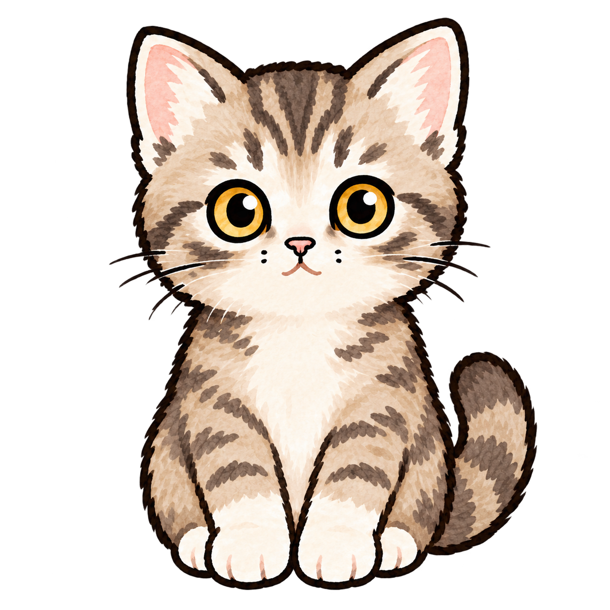

微信本来就是通知与沟通发生的地方，不必切换到陌生工具。
CONSUMER AI · WECHAT MINI PROGRAM · 0→1 MVP
极简土豆MINIMAL TODO
从一条消息，到一个可执行的行动。
一个面向微信场景的 AI 任务捕捉工具。它将通知、群聊内容和语音输入中的非结构化信息，转化为经过用户确认的待办、时间和提醒。AI 负责理解与整理，用户保留最终决定权。
AI 提取事件、时间、地点与链接，让复杂信息先被整理。
模型只给出结构化候选结果，用户确认后才保存为待办。
把信息转成行动，先从一个熟悉的入口开始。
9:41
TODAY / 今天
把今天，
过得轻一点。
你的今日伙伴小土豆在等你
完成一件小事。
完成一件小事。
Lv. 3 · 12/25 成长值

快速添加不用一项项填写
今天要做的事2 件
提交党员先锋队报名今天 23:59 · 提前1天提醒
+2快速添加关闭
粘贴文字语音输入
各位同志，上午好！2026年迎新学生党员先锋队现已开始招募。
1. 服务时间：8.30–9.1，可自选服务场次
2. 报名截止时间：8月20日24点
工作群：666
完整通知推文：https://mp.weixin.qq.com/...
1. 服务时间：8.30–9.1，可自选服务场次
2. 报名截止时间：8月20日24点
工作群：666
完整通知推文：https://mp.weixin.qq.com/...
AI系统将识别事件、截止时间、地点和链接；保存前仍由你确认。
确认内容关闭
报名迎新学生党员先锋队
8月20日
23:59
未识别，可留空
服务时间：8.30–9.1
工作群：666
工作群：666
提前1天
普通
默认不保存通知原文；只有确认后的结构化字段会进入待办。
TASK COMPLETE / 做得好
完成本身，
就值得庆祝。
✓
报名迎新学生党员先锋队今天 18:34 完成
已获得
+2 GROWTH小土豆很开心。
没有额外喂养，也没有逾期惩罚。
距离下一件装饰还差 11 点每一次完成，都让空间更像家。
THE PRODUCT QUESTION
降低创建待办的成本，而不是增加另一个复杂工具。
真实世界中的任务，往往已经存在于一段通知、一条群消息或一句口头表达中。用户真正缺少的不是记录能力，而是把非结构化信息转化为行动的能力。
因此，极简土豆采用“自然语言输入 → AI 信息抽取 → 用户确认 → 提醒执行”的产品链路。AI 处理重复性的理解和结构化工作，但不替用户做最终决定。
可选的情绪反馈层：完成任务后，用户通过成长值逐步解锁空间装饰，让抽象的完成感变成可见的长期变化。宠物不是产品入口，而是完成行为之后的正向反馈。